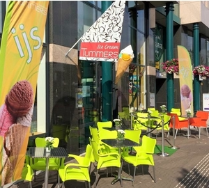

Feestdagen Openingstijden
Binnenweg

Binnenweg 133
2101 JE Heemstede
023-528-3005
Winkel openingstijden
ma-vr 09:00 - 17:30
za 08:30 - 17:00
Tearoom openingstijden
ma 13:00 - 17:00
di-vr 09:00 - 17:00
za 08:30 - 16:15
Kruisweg
Kruisweg 642
2132 CJ Hoofddorp
023-555-3226
Winkel openingstijden
ma gesloten
di-vr 09:00 - 17:30
za 09:00 - 16:30
Tearoom openingstijden
ma gesloten
di-vr 09:00 - 17:00
za 09:00 - 16:15
Nijverheidsweg
Nijverheidsweg 17A
2102 LJ Heemstede
023-547-7005
Winkel openingstijden
ma gesloten
di-vr 08:00 - 14:30
za gesloten